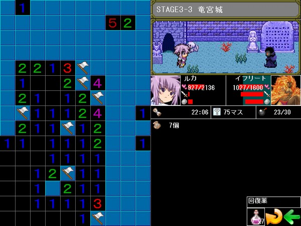
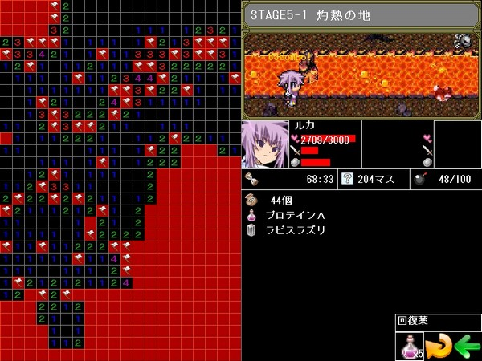
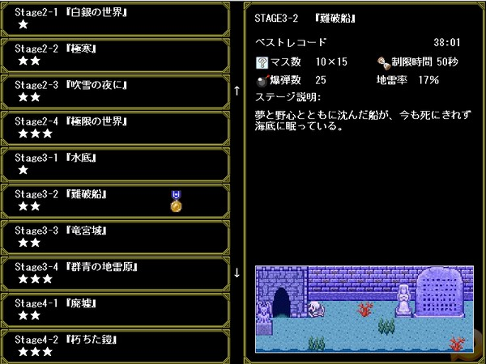
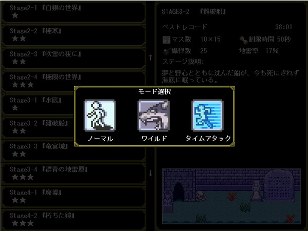
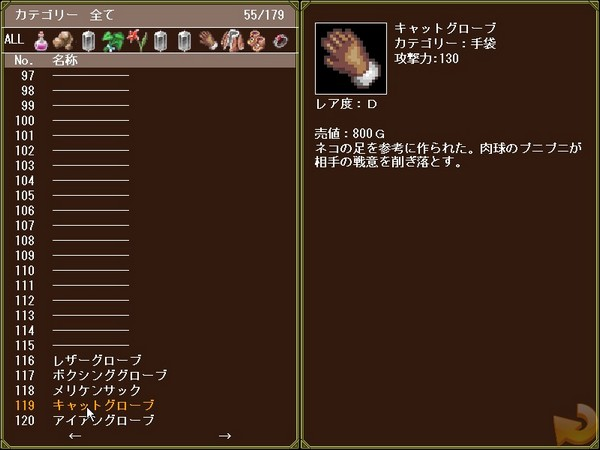
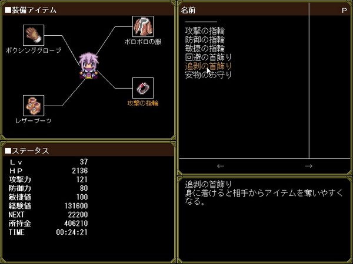
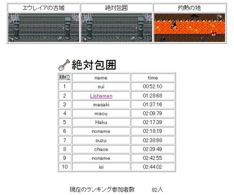

おたからスイーパーでは、地雷を避けながらマスを開けていく普通のマインスイーパー要素に加えて、ヒロインのルカがモンスターと戦うＲＰＧ要素がミックスされている。

冒険の目的は、世界中に散らばる全ての宝を手に入れること。頭をフル回転させてダンジョンに挑もう。

初心者向けのステージから、上級者用のステージまで、全部で２０種類ものステージが用意されている。広さ、爆弾の数、出現する敵の種類など様々な違いがある。

また、一度クリアしたステージは次回から「ワイルドモード」、「タイムアタックモード」で挑戦可能。１つのステージで何度も楽しめる。

・ワイルドモード……敵が強くなって登場する。
・タイムアタックモード……制限時間あり。
ダンジョン探険中に、様々なアイテムが手に入る。このアイテムを売ってお金を稼ぎ、新しいダンジョンへ向かう軍資金にしよう。
世界中に散らばる全てのアイテムを手に入れてアイテムマスターを目指せ！。

アイテムを売ったお金で、ヒロインの装備アイテムを買うことが出来る。
先に進めば進むほどモンスターが強くなってくる。ヒロインの装備を整えて挑もう。

ヒロインの装備アイテムには「アイテムの出現率アップ」などの効果を持つものもある。装備を有効活用して探索を有利に進めよう。
前作『ＳＰＥＥＤ』で大盛況だったランキングシステムが、今作にも受け継がれている。
各ステージ毎のベストレコードを集計し、ランキング上位の名前がランキングページにて掲載される。
しかも、前作の機能に加え今作ではTwitterのアカウント情報も付与することが可能になった。
ランキング１位を目指そう！
